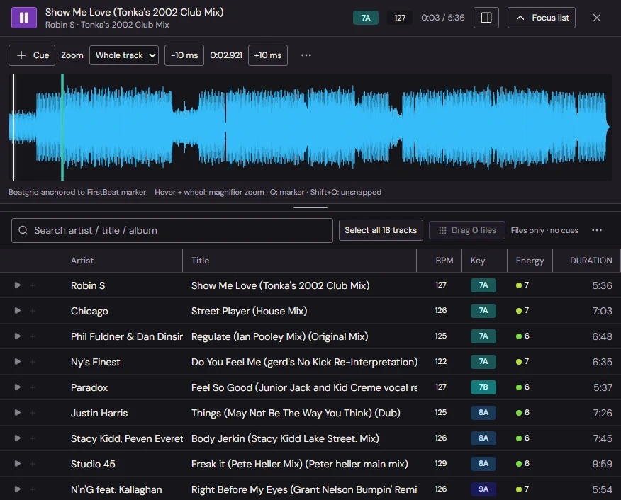
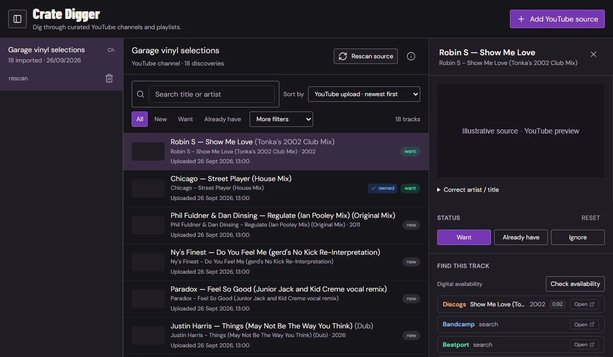
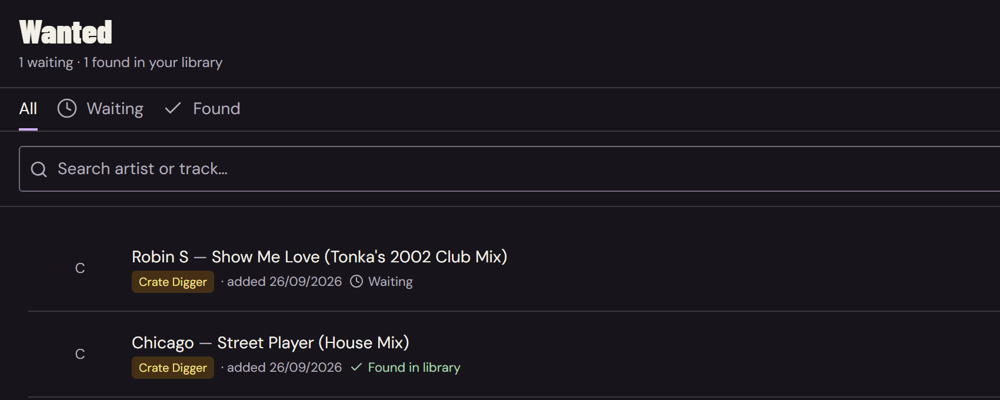
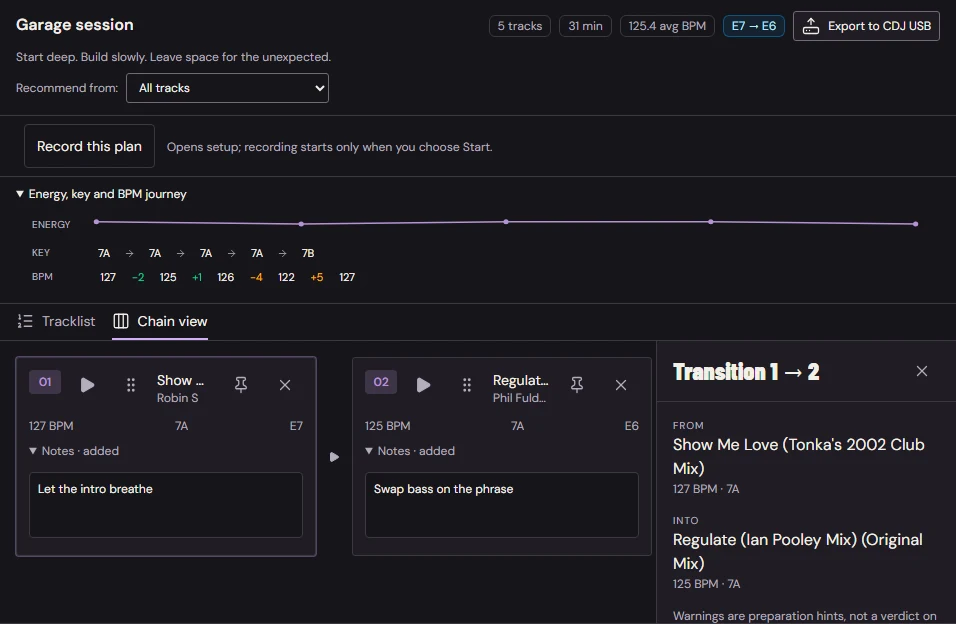
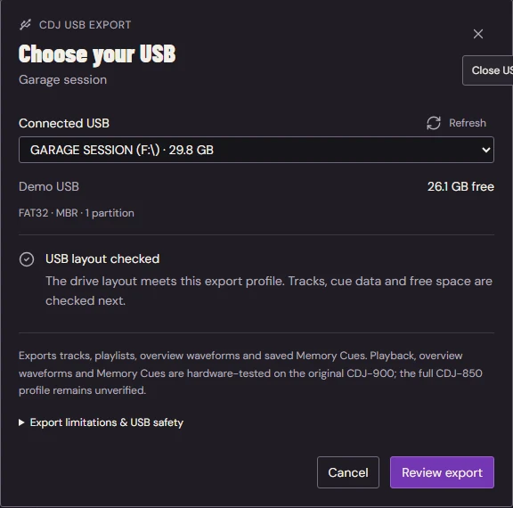
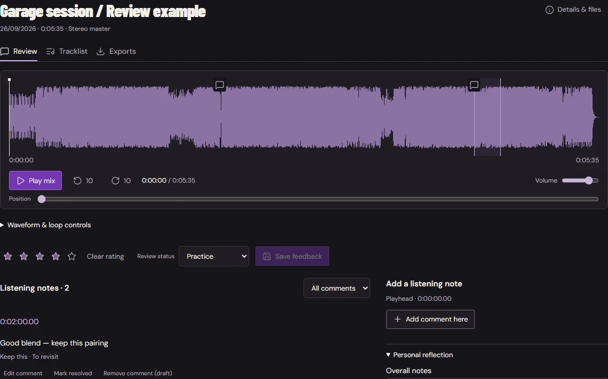

Your collection. Your next idea.Inside WISP / Demo collection
The workflow
GOOD SETS START BEFORE YOU PLAY.
Follow the channels you love. Keep the tracks worth finding. Shape a
running order, prepare your cues and take it to the decks.
01 / Your library
A COLLECTION. NOT A PILE.
Find the right track without losing your train of thought. Sort by
date added, narrow by BPM or key, and bring your favourites into
playlists.
Open a track to prepare its cues and notes. Keep the detail close
without losing sight of the rest of your collection.
BPM & key · Playlists · Cue preparation

Find a track. Keep your place.
02 / Crate Digger & Wanted
FOLLOW THE FINDS. NOT THE TABS.
Your favourite YouTube channels and playlists, gathered in one
place. Refresh a source, browse its newest uploads and audition
something that catches your ear.
Mark it Wanted so it doesn't disappear into another forgotten
bookmark. Check release matches and explore digital stores when
you're ready to find a copy.
Channel sources · Newest uploads · A proper wishlist

A good find deserves somewhere to go.
Don't lose the good ones.
A wishlist that stays with you.
Wanted connects discoveries with the tracks you already own.
Discogs matches and search links for Bandcamp, Beatport, Juno
and Traxsource give you a starting point—not a promise that
every track is for sale.

03 / Mix Plans
FIND YOUR FLOW. THEN FOLLOW IT.
Chain tracks into a running order. See how BPM, key and energy
move through the set, spot awkward jumps and audition the
transition before committing to it.
Reorder, leave a cue or a note, and try another route. It's a
blueprint, not a rulebook: your actual recorded tracklist can tell
a different story.
Track chains · Transition previews · Notes that stay put

The right next track makes all the difference.
04 / From WISP to the decks
PREPARED HERE. PLAYED OUT THERE.
Pick your playlist. Choose your USB. Take the set with you.

The actual export selector. A fictional demo USB.
Export your tracks, playlists, metadata, saved Memory Cues and
overview waveforms directly from WISP to USB for compatible CDJs.
A familiar playlist-to-USB workflow, without a separate rekordbox
export step. Prepare the collection where you organise it.
Record from your mixer's audio input. Keep a lossless master and
export a 320 kbps MP3 when it's time to share.
Rate the take, put comments on the exact moments you want to
revisit, and build the tracklist you actually played. Keep the
good pairings. Learn from the rough ones. Take both into your next
plan.
Mix ratings · Timestamped feedback · Actual tracklists

An example review, using a real track waveform.
A few useful things to know.
YOUR MUSIC. YOUR WORKFLOW.
What should I know about CDJ export?
WISP's direct export has hardware-confirmed playlist playback,
overview waveforms and Memory Cue recall on the original
CDJ-900. This is not certification for every CDJ or audio
format. Test your export on your own decks before a gig.
The current exporter uses a reference database; extra reference
entries can remain. Beat grids and detailed scrolling waveforms
are not included. WISP is independent software, not affiliated
with Pioneer DJ or rekordbox.
No. It imports discovery metadata from channels and playlists
and lets you preview videos. Availability checks query Discogs
and provide digital-store search links. Obtain music from
sources you're entitled to use.
Can I keep using my existing music workflow?
WISP works with your local collection. You can drag audio files
into other desktop apps, and optional Soulseek integration adds
search and transfer management when you configure your own
account. Use files you have permission to download or share.
What do I need to get started?
A 64-bit Windows 10 or 11 computer and your music collection.
Recording needs a compatible audio input; online discovery needs
internet access and the relevant provider setup in WISP
Settings. The app itself runs on your desktop.
Make room for the music.
YOUR NEXT SET STARTS HERE.
A desktop workspace for your own collection. No browser tab
required to use the app.